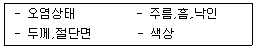
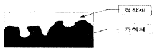

신발류제조기능사 (2004-07-18 기출문제)
1과목: 신발류제조공정
1. O.M.A란 다음 중 무엇을 말하는가?
- 주문자 상표부착 생산
- 고유 상표 부착 생산
- 시장질서 유지협정
- 계획생산
(정답률: 알수없음)

2. 중창에 부착된 리브(rib)에 골을 씌운 갑피의 가장자리와 대다리를 체인스티칭 하고 다음에 대다리와 겉창 주변에 접착제를 도포하여 압착기로 창을 붙이는 제조법을 무엇이라 하는가?
- 굳이어웰트 제조법
- 실루웰트 제조법
- 맥케이 제조법
- 사출성형식 제조법
(정답률: 알수없음)
3. 신발에 사용하는 재봉사는 주로 어떤 강도를 검사하는가?
- 인장강도
- 파열강도
- 골곡강도
- 마찰강도
(정답률: 알수없음)
4. 다음 중 천연 피혁이 아닌 것은?
- 풀 그래인(Full Grain)
- 스프리트(Split)
- 수에드(Suede)
- 가멘트(Garment)
(정답률: 알수없음)
5. 현재 인조피혁으로 많이 사용되는 것이 아닌 것은?
- 폴리 염화 비닐(P.V.C)
- 폴리 우레탄(P.U)
- 폴리 아마이드(P.A)
- 폴리 에스테르(P.E)
(정답률: 알수없음)
6. 신발의 재봉에서 게이지(gauge)작업이란 ?
- 갑피와 안감을 붙여주는 작업
- 신끈의 구멍을 뚫는 작업
- 재봉할 선을 그어주는 작업
- 작업할 갑피의 수를 세는 작업
(정답률: 알수없음)
7. 일반적으로 신발제작시 반드시 고려해야 할 사항과 거리가 먼 것은?
- 미관성
- 유행성
- 기능성
- 경제성
(정답률: 알수없음)
8. 피혁의 구조에 있어서 은면층과 망상층을 이루고 있는 것은?
- 털
- 표피
- 육면
- 진피
(정답률: 알수없음)
9. 화학구조의 변화를 거쳐 원료고무가 넓은 온도 범위내에서 탄성체에 탄성을 나타내는 상태로 전환되는 공정으로 이 공정에서 선상인 고무분자가 3차원적인 가교결합을 이루는 것은?
- 소련
- 가황
- 혼련
- 압연
(정답률: 알수없음)
10. 고무 가공 기계 중 임의의 두께로 고무판을 연속적으로 뽑는 것은?
- 압축기(extruder)
- 카렌다기(calender machine)
- 반바리기(banbury machine)
- 압연기(mixing roll press)
(정답률: 알수없음)
11. 가죽처리의 본작업이며 가죽의 불완전한 단백질을 안정된 물질로 바꾸는 작업은?
- 무두질(tanning)
- 세이빙(shaving)
- 중화
- 가지
(정답률: 알수없음)
12. 신골(LAST)의 볼(바닥) 모양에 따른 표시 방법 중 볼이 좁은 것을 의미하는 것은?
- W
- M
- S
- A
(정답률: 알수없음)
13. 신발제조 설비중 가황된 겉창의 불필요한 부분을 잘라내는 기계는?
- Roll기
- 돕핑기
- 귄취기
- TRIMMING기
(정답률: 알수없음)
14. 갑피에 사용하는 이지(안감)가 갖추어야 할 조건과 거리가 먼 것은?
- 갑피의 강도를 더욱 보강하여야 한다.
- 갑피의 변형을 방지할 수 있어야 한다.
- 통풍이나 습기의 흡수발산이 용이해야 한다.
- 강도 보강이 목적이므로 단단한 재질이어야 한다.
(정답률: 알수없음)
15. 슬립온 형식의 신발에 속하지 않는 것은?
- 스텝인
- 로우퍼
- 몽크 스트랩
- 브로그
(정답률: 알수없음)
2과목: 신발류디자인
16. 신발을 신는 목적에 따라 분류한 것이 아닌 것은?
- 볼링화
- 안전화
- 야구화
- 간호원용 신발
(정답률: 알수없음)
17. KS규격에 의해 신발의 길이 치수가 235라고 표시되어 있다면 그 내용은 무엇을 뜻하는가?
- 신발의 실제 길이가 235mm라는 뜻이다.
- 신발의 중창 길이가 235mm라는 뜻이다.
- 신발의 겉창 길이가 235mm라는 뜻이다.
- 발의 길이가 235mm인 사람이 신으면 된다는 뜻이다.
(정답률: 알수없음)
18. 우리나라에서 성인용 신발이란 몇세 이상이 신는 것으로 분류하는가?
- 17세
- 18세
- 19세
- 20세
(정답률: 알수없음)
19. 제화작업 시 갑피부분에 비닐장식이 있는 경우 접착을 견고하게 하기 위하여 행하는 작업은?
- 게이지
- 프라이머
- 토우라스트
- 중심부착
(정답률: 알수없음)
20. 갑피의 강도에 영향을 주는 요소가 아닌 것은?
- 깍기 정도
- 가죽 종류
- 습도
- 염색
(정답률: 알수없음)
21. 신발 디자인의 원리로서 적합치 않는 것은?
- 대비
- 조화
- 장식
- 비례
(정답률: 알수없음)
22. 포스터와 포장지, 달력 등 인쇄매체를 이용하여 전달하는 디자인은?
- 그래픽 디자인
- 영상 디자인
- 전시 디자인
- 컴퓨터 디자인
(정답률: 알수없음)
23. 디자인에서 엄숙한 분위기가 요구되는 형태는?
- 대칭형
- 율동형
- 회전형
- 대비형
(정답률: 알수없음)
24. 다음 중 무채색이 아닌 것은?
- 흰색
- 녹색
- 회색
- 검정색
(정답률: 알수없음)
25. 신발 디자인에서 고려하는 기능이라 함은?
- 만드는 기술
- 제작이 용이하다
- 사용하기에 편리하다
- 값이 싸다
(정답률: 알수없음)
26. 발의 바깥쪽 복사뼈와 안쪽 복사뼈의 위치를 바르게 설명한 것은?
- 안쪽 복사뼈가 더 높고 앞쪽이다.
- 바깥쪽 복사뼈가 더 높고 앞쪽이다.
- 안쪽 복사뼈가 더 높고 뒷쪽이다.
- 바깥쪽 복사뼈가 더 높고 뒷쪽이다.
(정답률: 알수없음)
27. 발을 제2의 심장이라고 하는 이유는?
- 심장에서 가장 멀리 떨어져 있으므로
- 발의 보행동작과 수반되는 혈관의 신축 운동이 혈액 순환에 도움을 주므로
- 발은 인체의 여러 부분 중 가장 중요하므로
- 발에 가장 많은 신경이 집중되어 있으므로
(정답률: 알수없음)
28. 다음 중 빛의 3원색은?
- 빨강, 파랑, 녹색
- 빨강, 노랑, 주황
- 빨강, 노랑, 파랑
- 빨강, 보라, 녹색
(정답률: 알수없음)
29. 일반적인 보행시 지면과 초기에 맞닿는 부분은?
- 족지골 부분
- 중족골 부분
- 말절모지 부분
- 발뒤꿈치 부분
(정답률: 알수없음)
30. 다음 중에서 동적인 느낌이 가장 강한 선은?
- 사선
- 수평선
- 수직선
- 곡선
(정답률: 알수없음)
3과목: 신발류봉재
31. 봉제에서 공정 편성의 중요성과 방법에 대한 설명으로 옳지 않는 것은?
- 공정 편성은 단순화, 전문화, 표준화의 원칙에 따라서 편성되어야 한다.
- 공정 편성은 제품의 이동경로로 부하가 최대 상태가 되도록 한다.
- 공정 편성을 하려면 공정분석, 시간연구, 가동 분석 등의 조사가 필요하다.
- 공정의 편성효율이 높게 조합되지 않으면 종합적인 생산효과는 기대할 수 없다.
(정답률: 알수없음)
32. 재봉작업시 밑실의 끝은 북에서 몇 cm 나오게 하는 것이 좋은가?
- 2~3cm
- 3~4cm
- 5~7cm
- 8~9cm
(정답률: 알수없음)
33. 지그재그는 산모양과 같기 때문에 꼭대기수로 땀수를 계산한다. 3cm 안에 보통 몇 산으로 하는가?
- 8산
- 10산
- 12산
- 14산
(정답률: 알수없음)
34. 직선 한선박기 재봉기의 바늘은 몇개인가?
- 1개
- 2개
- 3개
- 4개
(정답률: 알수없음)
35. 다음은 재봉기의 부분품들을 나타낸 것이다. 봉제과정에서 피재봉물에 적당한 압력을 가하여 규정의 땀을 원할히 형성될 수 있게 해주는 요소는?
- 침판(throat plate)
- 피이드 레귤레이터(feed regulator)
- 노루발 기구(presser foot)
- 보내기 기구(feed dog)
(정답률: 알수없음)
36. 실의 꼬임수에 따른 구분에서 애버리지(평균)꼬임에 해당되는 것은?
- 6∼12
- 20∼25
- 30∼40
- 40∼80
(정답률: 알수없음)
37. 공업용 재봉기의 표시방법 중 소분류 표시된 것은?
- 본봉
- 주변봉
- 단환봉
- 단평형
(정답률: 알수없음)
38. 다음은 재봉 바늘의 번호이다. 바늘이 가장 굵은 것은?
- 11
- 12
- 13
- 14
(정답률: 알수없음)
39. 한 종류의 피봉재물을 다른 종류의 피봉재물로 뒤집어 씌워서 접은 상태로 재봉한 시임(seam)형태는?
- 슈퍼임포즈 시임(Supeimposed seam)
- 프래트 시임(flat seam)
- 바운드 시임(Bound seam)
- 랩 시임(Lapped seam)
(정답률: 알수없음)
40. 신발공장에서 제품의 종류에 따라서 기계나 설비를 공정별로 배치하는 작업을 무엇이라고 하는가?
- 레이아웃(Layout)
- 세팅(Setting)
- 포밍(Forming)
- 바킹(Baking)
(정답률: 알수없음)
41. 재봉바늘의 굵기는 일반적으로 어느 부분의 직경을 나타내는가?
- 날(blade)의 직경
- 머리(butt)의 직경
- 봉대(shank)의 직경
- 바늘길이(length)
(정답률: 알수없음)
42. 다음은 재봉작업시 생기는 불량에 관한 사항이다. 연결이 잘못된 것은?
- 바늘이 자주 부러진다 - 노루발 압력에 의한 결함
- 주름이 생긴다 - 바늘판의 결함
- 땀뜀을 한다 - 바늘에 의한 결함
- 윗실의 조임새가 나쁘다 - 보빈케이스의 결함
(정답률: 알수없음)
43. 상축의 회전 운동으로 실채기 크랭크를 돌려 크랭크에 연결된 실채기 몸체가 상축을 중심으로 회전 운동을 하는 실채기 기구는?
- 캠 실채기
- 링크 실채기
- 회전 실채기
- 슬라이드 실채기
(정답률: 알수없음)
44. 단환봉 스티치란 다음 중 어느 것에 해당하는가?
- 록스티치(Lock stitch)
- 체인스티치(Chain stitch)
- 플래트 시임스티치(Flat seam stitch)
- 핸드 스티치(Hand stitch)
(정답률: 알수없음)
45. 실의 꼬임수가 서로 다른 단사를 연합(撚合)하여 가공한 것은?
- 혼방사
- 장식사
- 편사
- 교합사
(정답률: 알수없음)
4과목: 신발류검사
46. 가죽제품을 재봉할 때 고려해야 할 사항 중 틀린 것은?
- 노루발의 압력을 강하게 해준다.
- 아주 가는 바늘을 사용한다.
- 실조절기를 조여서 실이 팽팽하게 해준다.
- 톱니를 적당히 올려 노루발과 보조를 맞춘다.
(정답률: 알수없음)
47. 신발 갑피 재봉 도중 밑실이 자주 끊어지는 현상이 발생했다. 고장 수리대책이 아닌 것은?
- 바늘을 교환한다.
- 밑실 장력을 조정한다.
- 보빈케이스를 교환한다.
- 톱니의 표면을 매끄럽게 한다.
(정답률: 알수없음)
48. 신발 갑피 재봉시 일반적인 신발의 재봉 봉대 간격은 부품의 끝에서 얼마나 떨어져야 하는가?
- 0.5~1.0mm
- 1.5~2.0mm
- 2.5~3.0mm
- 3.5~4.0mm
(정답률: 알수없음)
49. 피재봉물의 겉면에서 재봉선이 보이지 않도록 천의 중간 부분이 뜨게 봉합하는 방법은?
- 블라인드봉
- 팔자뜨기봉
- 자수봉
- 보강봉
(정답률: 알수없음)
50. 신발의 뒷보강(back counter)부분처럼 굴곡이 있는 부분을 재봉하는데 유리한 재봉기는?
- 굴곡박기(post)재봉기
- 모카(mocca)재봉기
- 지그재그(zigzag)재봉기
- 본봉 재봉기
(정답률: 알수없음)
51. 접착 불량시의 확인사항에 해당되지 않은 것은?
- 바핑(Buffing)상태
- 선처리 유무
- 피착제의 재질
- 접착 조건
(정답률: 알수없음)
52. 각 나라별 문수표시 방법이다. 틀린 것은?
- 아시아지역 표시는 mm로 한다.
- 일본은 cm로 표시한다.
- 유럽지역의 한 문수차이는 ± 6.6mm 이다.
- 한국의 한 문수차이는 ± 5.5mm로 한다.
(정답률: 알수없음)
53. 신발 제화 공정 중 신골에 씌워진 상태의 갑피 형태를 검사하는 것은?
- 성형검사
- 앞조임검사
- 히팅검사
- 둘레게이지검사
(정답률: 알수없음)
54. 아래의 검사는 어느 공정의 검사인가?

- 재봉검사
- 제화검사
- 재단검사
- 완제품 검사
(정답률: 알수없음)
55. 다음의 재생 고무의 품질판정 방법 중 잘못된 것은?
- 비중, 섬유분이 작아야 한다.
- 아세톤이 많이 함유되어야 한다.
- 가공성이 좋아야 한다.
- 클로로포름 추출량이 많아야 한다.
(정답률: 알수없음)
56. 다음은 혼합(오픈 롤)의 작업에 대한 설명인데 잘못된것은?
- 유황을 원료 고무 전체에 골고루 뿌리면서 롤링 작업을 하여 분산시킨다.
- 냉각된 생지는 파레트 위에 LOT 별로 구분, 적재시킨다.
- 적재시 배합명, 혼합일시를 기록하고 꼬리표를 붙인다.
- 반바리에서 혼합된 고무를 오픈롤에서 3∼4회 더시팅(Sheeting)하여 약품을 모은다.
(정답률: 알수없음)
57. 프레스 공정에서 밑창이 몰드에서 잘 떨어지지 않고 달라붙는 경우에는 어떤 약품을 뿌려주는가?
- 충진제
- 이형제
- 보강제
- 가황제
(정답률: 알수없음)
58. 신끈고리 부착 재봉시 고리하단에 불량이 생겼다면 그 중요한 원인으로 생각 되는 것은?
- 접착이 잘못되었다.
- 재봉속도가 늦었다.
- 본드를 칠하지 않았다.
- 1회 왕복재봉을 하지 않았다.
(정답률: 알수없음)
59. 재봉기 작업에서 박음질 불량이 되었다. 원인과 대책의 연결이 잘못된 것은?
- 바늘 부착상태 불량-바늘높이 조정
- 노루발 압력결함-노루발 압력을 세게함
- 바늘가마의 시간차-바늘높이 조정
- 밑실이 잘풀림-북집의 나사 조임
(정답률: 알수없음)
60. 아래 그림은 접착제 도포후 액상인 접착제가 요철면에 세부까지 침투되고 고화 또는 경화되어 오목한 부위에서 잘빠져 나오지 못하는 것을 나타내었다. 이것을 무슨 효과라 하는가?

- 투묘 효과
- 지퍼 효과
- 융착 효과
- 모세관 효과
(정답률: 알수없음)